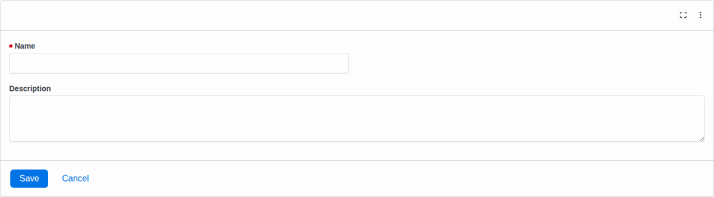

Daily Use
Administration
The installed Obsidian blocks support category-based type management, context-aware record grids, standard or Lava-rendered detail views, entity associations, and on-demand PDF output.
Manage Record Types
The Records page combines Rock’s category tree with Record Type List. Select a category to display its types, then open a type to edit its configuration and view the records that belong to it.
| Column or Action | Behavior |
|---|---|
| Name and Description | Identify each type in the selected category. |
| Active | Shows whether the type participates in active lists and pickers. |
| Custom Grid Columns | Includes record-type attributes selected through Rock’s customized grid settings. |
| Add / Edit / Delete | Available only when the current person passes the corresponding Rock authorization checks. |
Add and Edit Records

A record stores Name and Description plus the custom attributes defined by its type. When the page supplies a record type, the form loads that type and its secured public-edit attributes. Association parameters can also carry the owning entity into the detail flow.
- If automation does not provide a name, the record type’s Name Template can generate one after attributes are saved.
- A record can be associated with people, groups, or any other mapped entity type.
- Record detail enforces attribute security when loading values for view or edit.
Configure Record List
Record List can be pinned to one record type or resolve type and entity context from the current page. Its block settings control the linked detail page and the standard columns shown.
| Setting | Default | Purpose |
|---|---|---|
| Show Name Column | On | Displays the generated or supplied record name. |
| Show Record Type Column | On | Identifies the type in mixed-type grids. |
| Show Description Column | On | Displays the record description. |
| Show PDF Download Column | On | Offers a download when the record type has a report template. |
| Created / Modified DateTime | Off | Adds Rock entity timestamps. |
| Workflow Created DateTime | Off | Adds the source workflow creation timestamp with a configurable heading. |
Filter and Sort
- Use Rock customized-grid settings to choose visible record attributes and sorting.
- Defined Value, Campus, and Single Select grid attributes receive option-based filters.
- Workflow-created date filtering supports start and end dates for workflow-derived records.
- Context pages restrict the available record types to types mapped to the current entity and authorized for the current person.
Person Profile Records
The plugin installs a Records page under the Person Profile. It resolves the profile person, gathers all of that person’s aliases, and shows associated records whose types are both authorized and configured for person-profile display.
Do not use person-profile display as a substitute for security. The record type and record still need explicit View permissions appropriate for the staff who open the profile.
Diagnostics
Version 1.1.3 writes plugin diagnostics to Admin → System Settings → Rock Logs under the org.tpcc.Records category.
- Add the
org.tpcc.Recordscategory at Information for operational entries. - Use Debug for detailed record-list resolution and workflow-action traces.
- Routine plugin diagnostics no longer create entries in Rock’s exception log; genuine errors retain their stack traces.